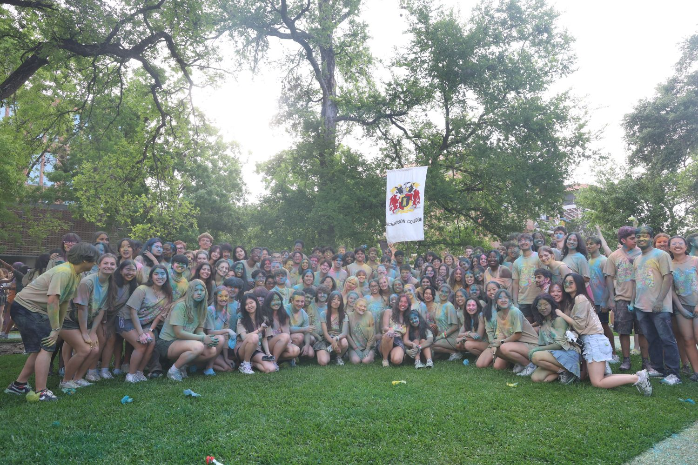
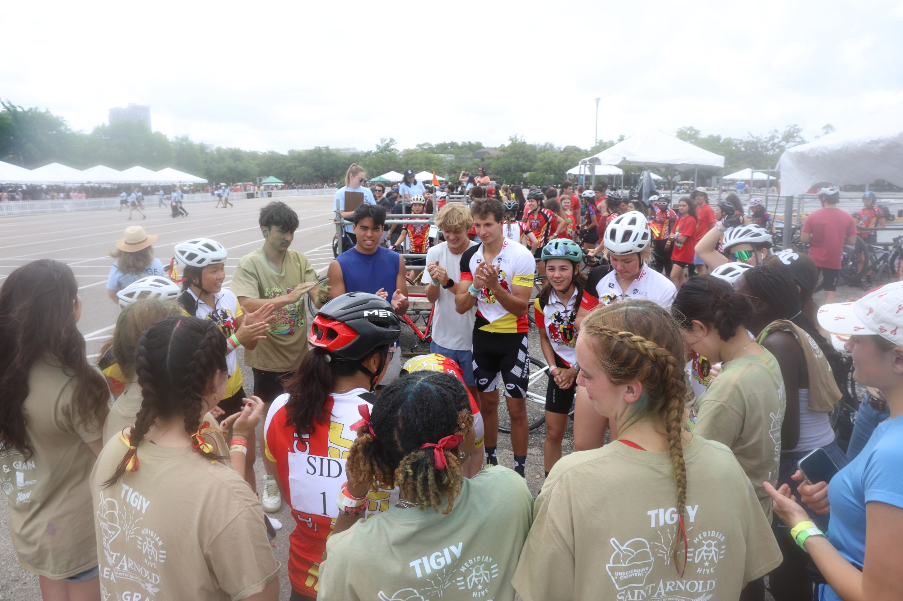

project page
coordinating beer bike, rice's most chaotic and culturally sacred tradition, for sid richardson college.
beer bike is event design at its most unhinged: a century-old rice tradition involving bikes, water balloons, and an entire residential college's worth of school spirit. as coordinator i'm the one making the chaos actually happen, which means logistics, creative, and keeping a few hundred people organized and excited at once.
there's no brief for this, just tradition, a budget, and a lot of people to wrangle. i handle [theme / merch / scheduling / day-of, etc.] and treat the whole day as one experience to design, from how it flows to how it looks. it's the least "portfolio" thing i do and somehow one of the most design-heavy.

